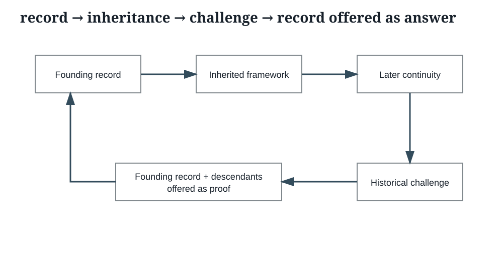

2017 and 2025 as bookends
The record is challenged for what it failed to preserve and update; continuity of that record is then used to answer the challenge.
2017 Protest
How can the admission close while the presenting relationship remains unresolved?
2025 complaint
Why was the relationship not revisited earlier in light of the later treatment-state evidence?
E017 · CLIN-003440–CLIN-003468

The response
“As the letters show, we have had a clear understanding for quite some time that Sinemet does help his pain.”
The same response accepts that Sinemet CR “provided him with profound relief currently.”
E016 · CLIN-003243–CLIN-003269
The analytical point is not that later letters prove nothing. They can independently prove later observations and later discussions. The narrower question is whether continuity of interpretation independently proves that the founding information state was complete.